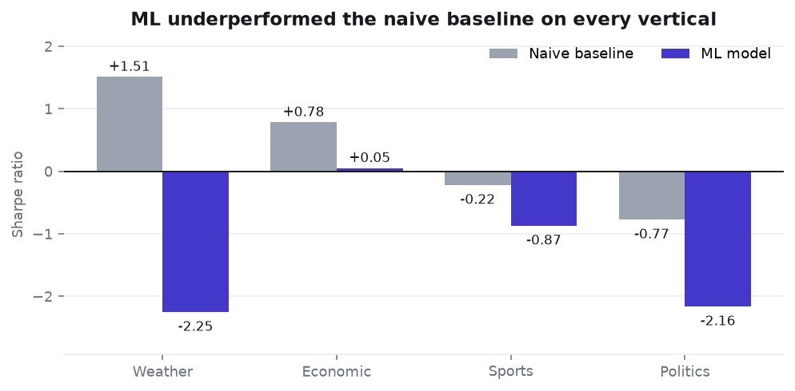
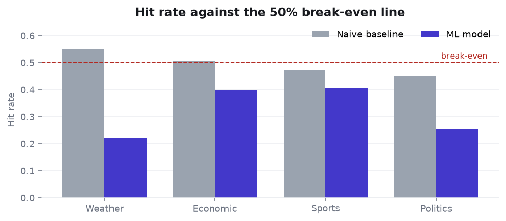
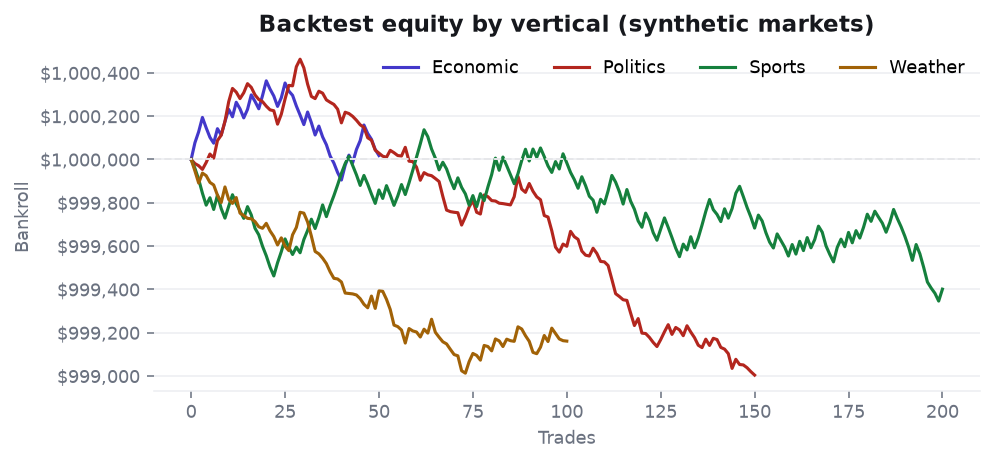
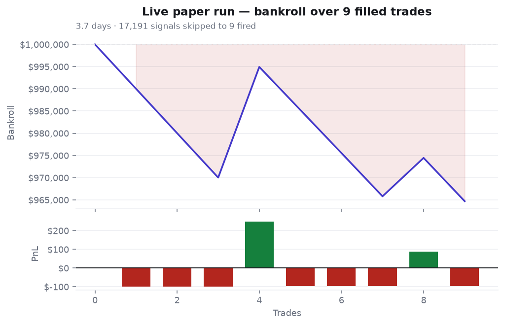

Prediction Market Lab
Research report — multi-vertical signal evaluation against a pre-committed gate
This report documents a research pipeline built to answer one question: does a machine-learned signal beat a trivial baseline on prediction-market contracts? The pipeline produced a negative answer, and that answer is the deliverable. The evaluation was pre-committed, the baseline was simple enough to audit, and the conclusion was confirmed against live paper-trading data.
1. The evaluation gate
Before the experiment ran, the go/no-go criterion was written down and the model was required to beat the naive baseline on at least one vertical. It beat it on none.
| Vertical | Naive Sharpe | Naive hit | ML Sharpe | ML hit | ML accuracy |
|---|---|---|---|---|---|
| weather | 1.511 | 55.1% | -2.251 | 22.0% | 0.525 |
| economic | 0.784 | 50.6% | 0.052 | 40.0% | 0.400 |
| sports | -0.219 | 47.2% | -0.870 | 40.5% | 0.562 |
| politics | -0.773 | 45.1% | -2.162 | 25.3% | 0.750 |
The politics row is the sharpest illustration. The model
reached 75% classification accuracy
on its own test set while producing a Sharpe of
-2.16. Accuracy against a synthetic
distribution is not edge.


2. Backtest equity by vertical

3. Live paper run
Backtests are not evidence. The bot was run against the live Kalshi API in paper mode for 3.7 days with the risk engine and execution layer enabled.

Fill log
| Ticker | Vertical | Side | Entry | Outcome | PnL | Bankroll |
|---|---|---|---|---|---|---|
KXPOL-0001 |
politics | NO | 19c | YES | -$99.94 | $9,900.06 |
KXPOL-0002 |
politics | YES | 10c | NO | -$100.00 | $9,800.06 |
KXPOL-0003 |
politics | YES | 17c | NO | -$99.96 | $9,700.10 |
KXPOL-0031 |
politics | NO | 28c | NO | $249.12 | $9,949.22 |
KXPOL-0032 |
politics | NO | 56c | YES | -$96.88 | $9,852.34 |
KXPOL-0033 |
politics | NO | 6c | YES | -$96.96 | $9,755.38 |
KXPOL-0046 |
politics | YES | 12c | NO | -$97.44 | $9,657.94 |
KXPOL-0047 |
politics | YES | 53c | YES | $86.48 | $9,744.42 |
KXPOL-0048 |
politics | NO | 11c | YES | -$97.46 | $9,646.96 |
17,191 signals were skipped to 9 fired. A strategy that has to reject 99.95% of its own signals has been over-fitted to noise.
4. What these numbers do and do not mean
What can be concluded
- The ML signal did not beat a trivial baseline on synthetic data, and the pre-committed gate was failed.
- The live paper run confirmed the direction, with a Sharpe of -1.005.
- The pipeline — simulator, backtester, risk engine, execution simulator, PnL ledger, paper runner, live telemetry — is sound enough that its verdict can be trusted.
What cannot be concluded
- That the strategy is worthless on real markets. The synthetic simulator and 3.7 days of paper trading are not a fair test of a real edge.
- Anything precise about the Sharpe. Nine trades is a direction, not an estimate.
5. Reproduction
The report is generated from the JSON in research/data/:
python3 -m venv .venv && .venv/bin/pip install matplotlib jinja2
.venv/bin/python -m research.build_reportBacktest parameters used for this experiment:
n_markets:500lookback:1000force_ttl_seconds:2000tick_step:20seed:42